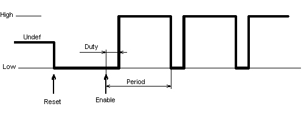
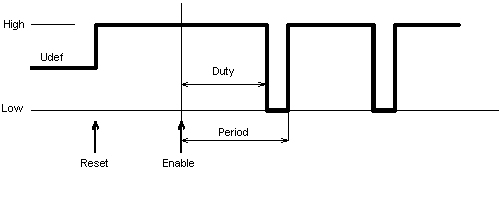
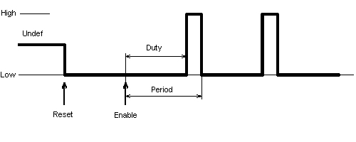
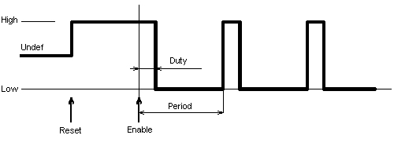

| PWM | |
|
|

After the initialization of the PWM component, when the component is disabled (or has not been enabled yet) the output is set to the value specified by the Initial polarity property. This value also represents value of the output which is active during the "duty" part of the cycle (tD) when the component is enabled and output signal is generated. For details on timing and initial polarity options please see the pictures below.
Example of generated signal:
Initial polarity is Low, Ratio is 20%
|  |
Initial polarity is High, Ratio is 80%
|  |
Initial polarity is Low, Ratio is 80%
|  |
Initial polarity is High, Ratio is 20%
|  |
SetValue and ClrValue methods allow user to control polarity of output signal when the component doesn't generate the output (i.e. is disabled or has not been enabled).
Emergency shutdown functionality
Note: This feature may not be available on all HCS12, HCS12X derivatives.
Emergency shutdown functionality is applicable only for Counter that is part of the PWM module.
There are two properties in the component that influence setting of this feature.
- Emergency shutdown - enable/disable PWM shutdown functionality
- Interrupt service/event - enable/disable PWM interrupt
When the Emergency shutdown functionality is enabled and if the
Interrupt service/event is enabled the PWM channel with the highest number is forced to input and the PWM module will generate an emergency shutdown
interrupt when Input active level on this pin is changed. The PWM module stops generation of the output signal, forces
all the output pins to the level se in the Shutdown output level property and it also generates the interrupt.
An event OnShutdown is called when the interrupt is invoked.
Note that event is called always when interrupt is invoked both when the emergency shutdown is asserted and de-asserted.
The component provides GetShutdownStatus and RestartPWM methods for shutdown status
detection and restarting the PWM signal generation.
See Typical Usage for example service of PWM emergency shutdown.
Sharing of the PWM module emergency shutdown interrupt is not supported. The Interrupt service/event property can be enabled in only one PPG or PWM component, although the shutdown stops output signal generation of the whole PWM module.
PMF reload interrupt sharing
Sharing of the PMF reload interrupt is not supported.
The Interrupt service/event property can be enabled in both components, but only one OnEnd event can be selected.